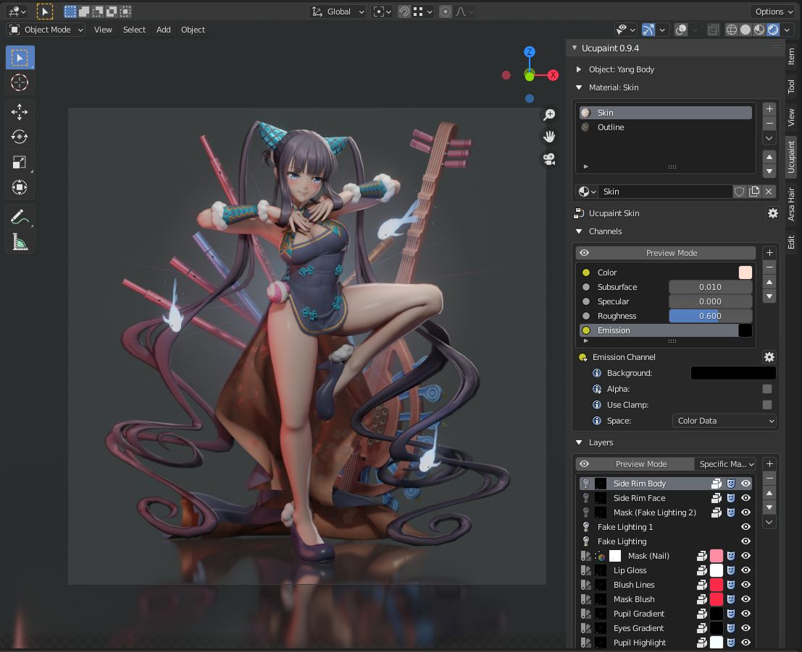
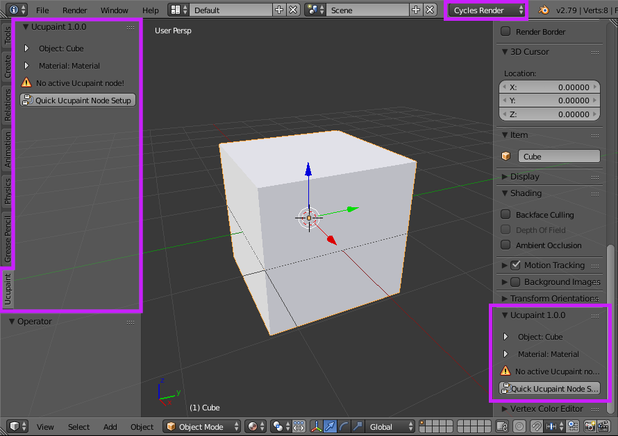
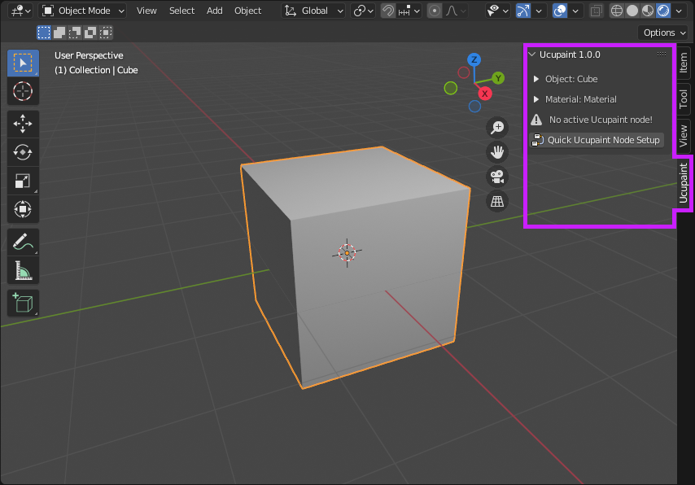

INTRODUCTION TO UCUPAINT

What is Ucupaint?
Ucupaint is a Blender addon for managing textures as layers for Eevee and Cycles render engines.
Requirements
You need at least Blender 2.79 to use this addon, but more advanced features are only available in modern versions of Blender (2.80 & above).
Installation
- Go to github.com/ucupumar/ucupaint/releases and download an addon package according to your Blender version.
- Open Blender, go to Edit > User Preferences, select the Add-ons tab and press the Install button, browse your downloaded addon zip file and click Install add-on.
Contribute
Visit Ucupaint Github to access or contribute to the source code. Or visit Ucupaint Wiki Github to access or contribute to the source code of this wiki.
Discord Server
You can join Ucupaint Discord to ask or discuss things related to Ucupaint.
Locations
You can find Ucupaint in the properties panel of the 3D viewport and also the Shader editor.
Blender 2.79
For Blender 2.79, you should be using the Cycles render engine.
|  |
|---|
| Ucupaint locations in Blender 2.79 are only available if you're using Cycles |
Blender 2.80 and above
For Blender 2.80 and above, it's in the Ucupaint tab.
|  |
|---|
| Ucupaint location in Blender 2.80 and above |